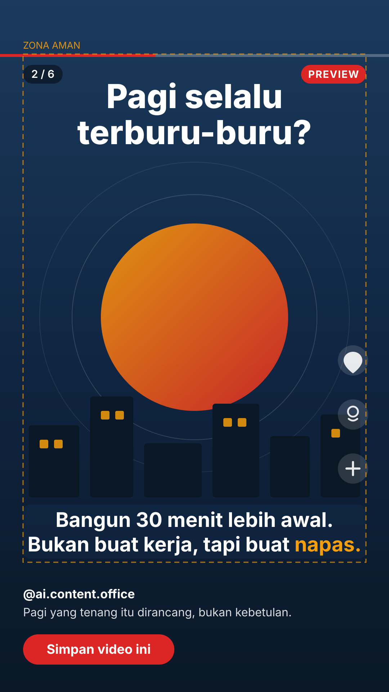

docs/content-templates/). Garis putus-putus kuning = batas zona aman.Zona layout (1080 × 1920)
0–150 pxZona atas — status bar & UI aplikasi, kosong
150–420 pxZona hook — teks hook 0–3 detik, besar dan kontras
420–1380 pxZona visual — visual utama scene
1380–1560 pxZona subtitle — burned-in, maks. 2 baris, ±42 karakter/baris
1560–1920 pxZona bawah — caption & action bar TikTok, kosong
Rel kanan140 px dari kanan — rel aksi TikTok, jangan taruh elemen
Alur scene — contoh 60 detik
1
Hook
Jam alarm, cahaya pagi — “Pagi selalu terburu-buru?”
0–3 dtk
2
Poin 1 — Siapkan malam sebelumnya
Motion graphics checklist tercentang
3–12 dtk
3
Poin 2 — Bangun 30 menit lebih awal
Stock footage kopi di jendela (frame di samping)
12–24 dtk
4
Poin 3 — Satu tugas penting dulu
AI video meja kerja, notifikasi dimatikan
24–38 dtk
5
Rekap tiga poin
Tiga ikon dalam satu layar, tahan 2 detik
38–50 dtk
6
End card / CTA
Latar navy, logo, “Simpan video ini”
50–60 dtk
Aturan cepat
- Subtitle: Inter tebal 64 px, putih, pill navy 80% — maks. 2 baris, sinkron dengan voice-over.
- Progress bar merah 8 px di atas zona visual + nomor scene (
2 / 6). - Logo hanya di end card, bukan di setiap scene.
- Preview berstatus
previewdivideo_versions; final wajib 1080 × 1920 + checksum. - Audio: voice-over jernih, musik bed ducking −18 dB, fade out di end card.
Catatan: File ini mockup desain (bukan video). Preview video sebenarnya dirender Yanti sebagai MP4 dan masuk antrean review Dika pukul 14.00 WIB.